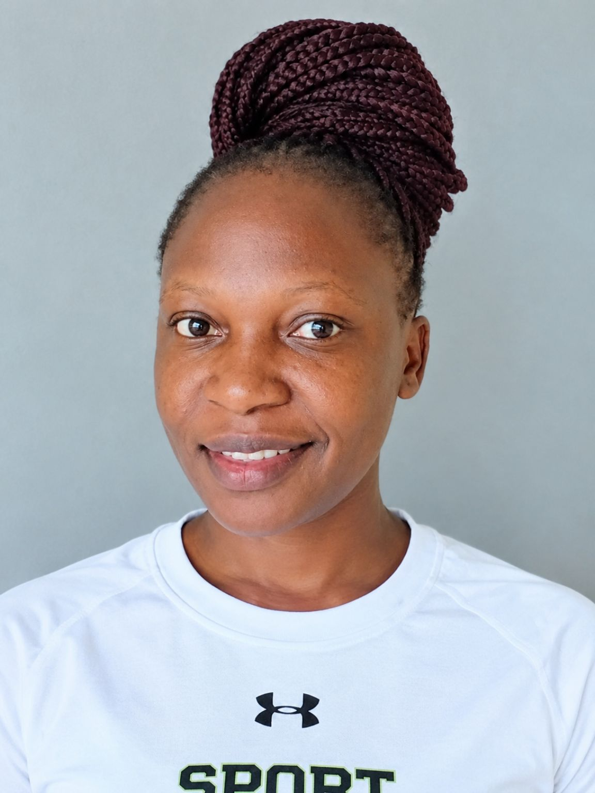
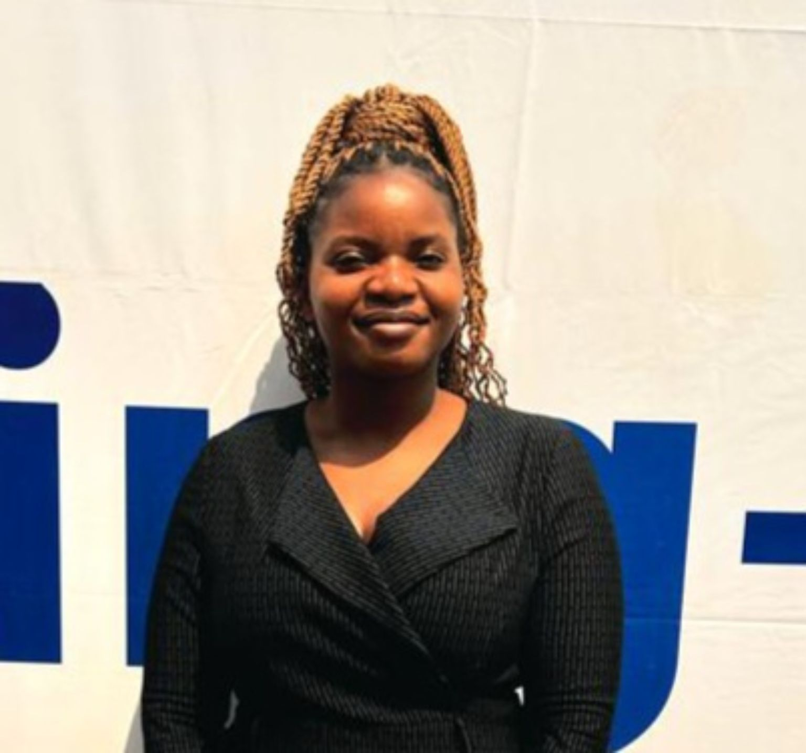

Our Team
Meet the people contributing their skills and experience to the work of Bright Futures Foundation.
Our team members
Profiles are shared to introduce the people supporting the Foundation's work.
Chrissy Chawanda
chrissychawanda@brightfuturefoundation.mw
Founder
Chrissy Chawanda is a Malawian development practitioner, entrepreneur and community empowerment advocate with academic backgrounds in Agricultural Enterprise Development, Microfinance and a Master’s degree in Agroecology. She is passionate about inclusive economic development, education, entrepreneurship and sustainable livelihoods for underserved communities.

Cecilia Suwali
ceciliasuwali@brightfuturefoundation.mw
Environmental Scientist
An Environmental Scientist passionate about climate action, environmental conservation, and sustainable community development. Committed to driving positive change and building resilient communities.

Innocent Ghandi Msukwa
innocentghandimsukwa@brightfuturefoundation.mw
Vice Chairperson – Monitoring & Evaluation
A development enthusiast passionate about programme monitoring, evaluation, organisational accountability and community development. Committed to strengthening programme effectiveness, tracking impact and promoting evidence-based decision-making to ensure sustainable and meaningful change in communities.

Clement Mlera
clementmlera@brightfuturefoundation.mw
Communications
Clement Mlera supports organisational communication and information sharing. He is committed to strengthening public engagement and promoting the organisation's work and community impact.
Marry DossI
marrydossi@brightfuturefoundation.mw
Finance
Marry DossI supports the organisation's financial management and accountability. She is committed to promoting transparency, responsible resource management and effective financial administration.